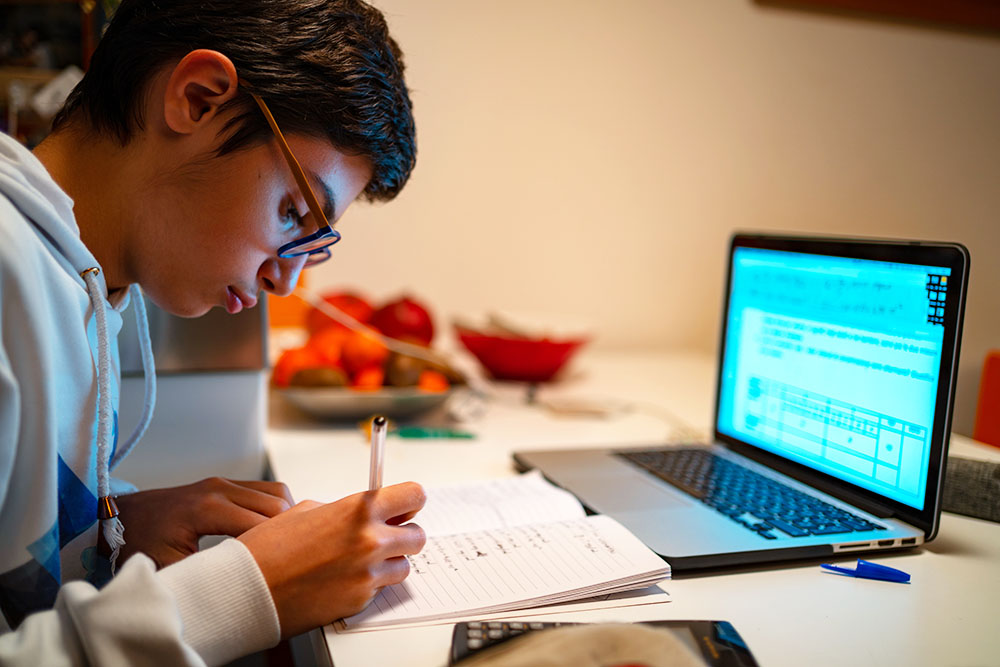

Deze testversie van onze informatiesite is gemaakt door
Mike Smit Faivre,
software developer
(2e leerjaar)
Informatie vakken
Web
Bij Web leer je dingen zoals websites bouwen, je begint met html en javascript.
Native
Bij Native leer je hoe je apps codeert, met talen zoals Python en C#.
Pra
Bij Pra werk je samen in een groep aan projecten, je leert hier hoe je moet samenwerken met andere.
Nederlands
Bij Nederlands leer je over de Nederlandse taal, zoals lezen, praten en luisteren. Je kan dit vak eerder afronden.
Engels
Bij Engels leer je over de Engelse taal, je kan dit vak ook eerder afronden.
Rekenen
Bij Rekenen leer je meer over dingen berekenen, je kan dit vak ook eerder afronden.
Pro
rbnbjrtvjervrktjbnrtjbtkrnjbn
Mtu
Bij Mentor uur krijg je belangrijke informatie, bijvoorbeeld over stage.
Mtg
Bij Mentorgesprekken heb je een persoonlijk gesprek met de mentor, dit gaat over bijvoorbeeld je voortgang. Dit heb je 1 keer in de maand.
Informatie huiswerk
Huiswerk
Als je goed doorwerkt tijdens de lessen, krijg je meestal niet veel huiswerk. De meeste opdrachten kun je gewoon in de klas afmaken, omdat je daar de tijd voor hebt. Soms komt het voor dat je toch wat extra werk mee naar huis krijgt, bijvoorbeeld wanneer je een project moet afmaken. Het huiswerk bestaat vooral uit programmeeropdrachten. Af en toe werk je ook aan andere vakken, zoals Nederlands, Engels of Rekenen.

Vakanties
Hieronder vind je een overzicht van het vakantierooster in schooljaar 2026-2027 voor leerlingen vmbo en studenten mbo Curio.
| Vakantie | Datum |
|---|---|
| Curiodag (geen lessen) | 1 oktober 2026 |
| Herfstvakantie | 19 t/m 23 oktober 2026 |
| Kerstvakantie | 21 december 2026 t/m 1 januari 2027 |
| Voorjaarsvakantie - carnaval | 8 t/m 12 februari 2027 |
| Goede vrijdag | 26 maart 2027 |
| Tweede paasdag | 29 maart 2027 |
| Meivakantie | 26 april t/m 7 mei 2027 (Koningsdag 27 april - bevrijdingsdag en hemelvaart 5 en 6 mei) |
| Tweede pinksterdag | 17 mei 2027 |
| Zomervakantie | 26 juli t/m 3 september 2027 |
Sfeer op de afdeling
Er is een goede sfeer op de afdeling, de mensen zijn gezellig, je kan vragen stellen aan mensen en iedereen zit wel op zijn plek. Het is leuk, maar ook informeel. Je leert veel en je mag tijdens het werken bijna altijd wel praten.